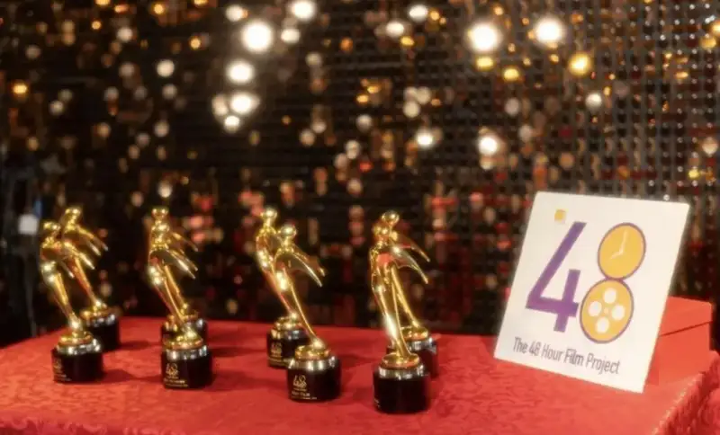
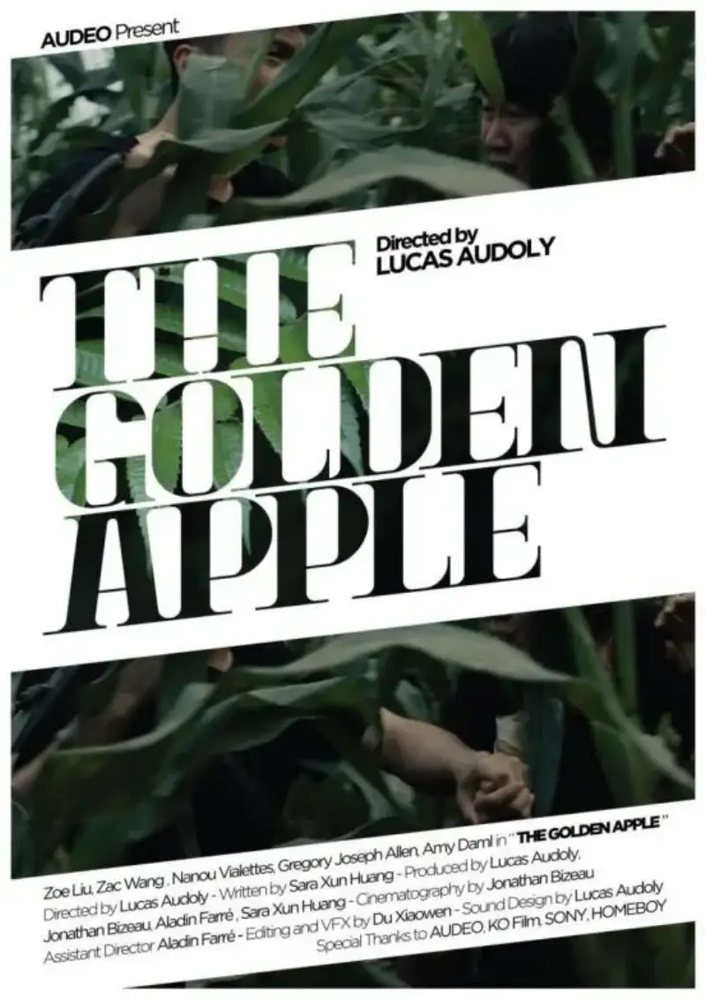
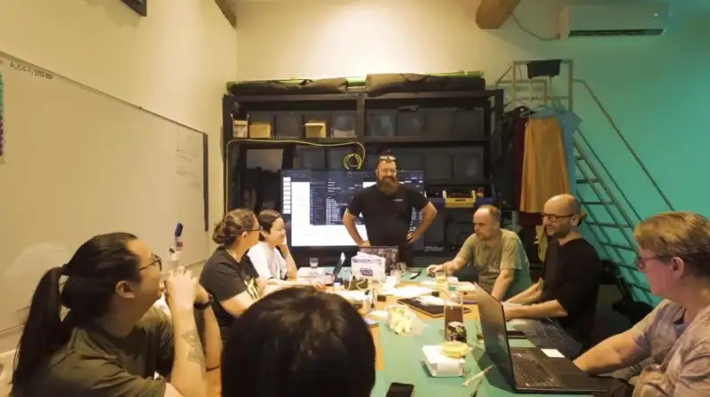
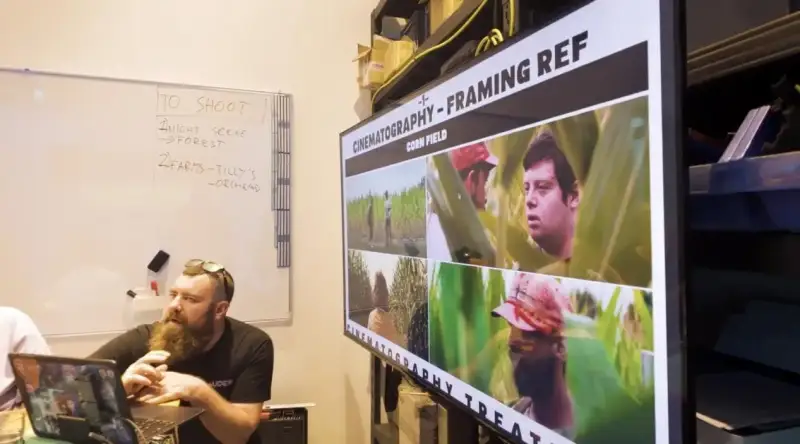
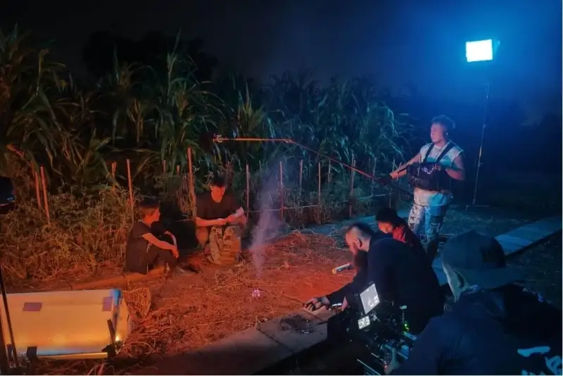
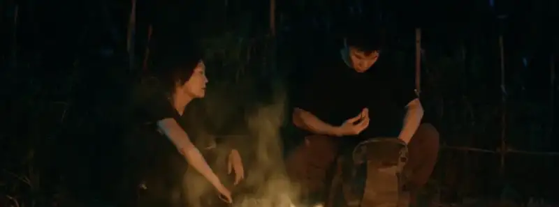
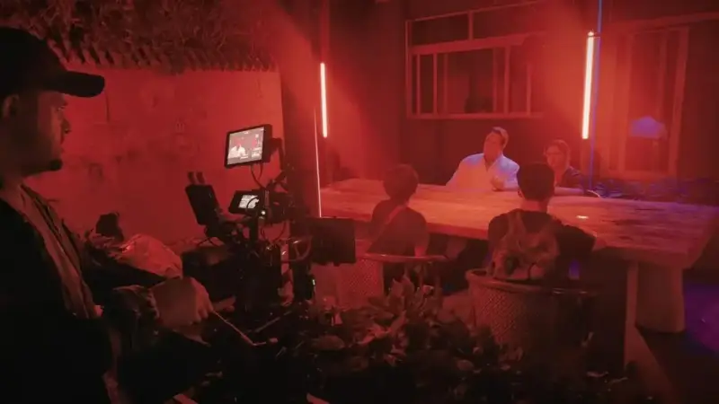
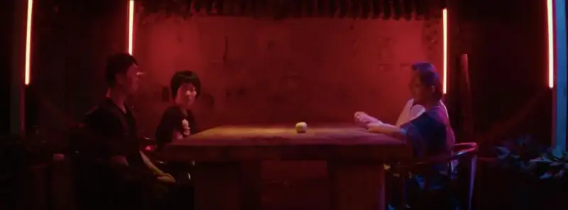
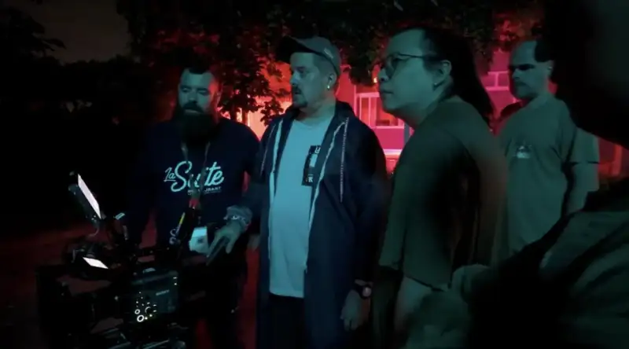
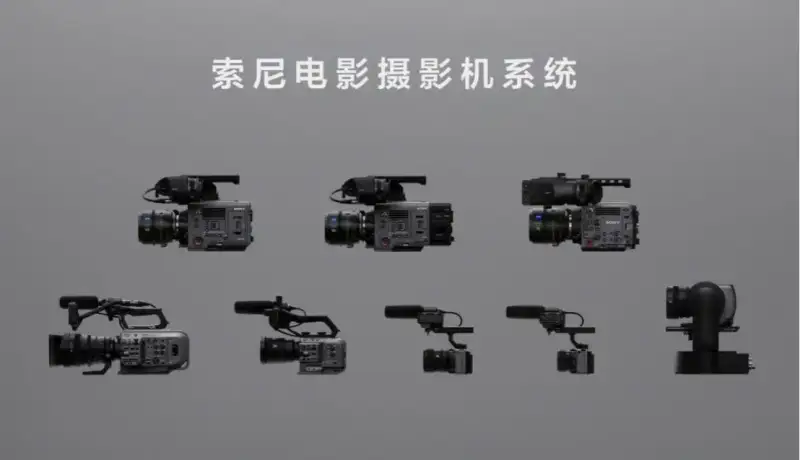

The 48 Hour Film Project was founded in Washington, D.C., in 2001. It encourages film fans and professionals to make a short film within 48 hours, including writing, shooting, and editing. Exciting, right? It is a global filmmaking contest. Since it began, it has been held in more than 100 cities around the world.

The 2024 awards ceremony
In this year's 48 Hour Film Project, the team called The Villagers, led by director Lucas Audoly, was nominated for several awards for its short film The Golden Apple. These included best screenplay, best score, best ensemble cast, and best costume design. The team finally won the best genre award. For the night scenes of this shoot, director Lucas Audoly (Lucas below) and director of photography Jonathan (Joe below) chose the compact Sony CineAltaB with its dual native ISO. To explore how Sony cinema cameras faithfully capture the creator's intent, CineHello interviewed director Lucas and DP Joe in depth.

The Golden Apple poster
CineHello: How many times have you entered the 48 Hour Film Project? What draws you to it?
Lucas: This is my second time in the 48 Hour Film Project, but my first as a director. I enter because it offers a unique challenge. It lets me solve complex problems and test my ability under pressure. I also look forward to working with the team, because I value building strong relationships, sharing ideas, and working toward a common goal. The mix of challenge, high pressure, and teamwork makes this chance hard to resist. Both the team and I grow from it.
Joe: I have taken part six times in all, twice as a cinematographer and four times as a gaffer. For me, taking on this kind of challenge is a pleasure. It feels good to work with a team that focuses on story and is full of passion. It also makes our bonds stronger.
CineHello: Once you decided to enter, how did you quickly find like-minded partners and divide the work?
Lucas: After we decided to enter, we built a core team early on. The members shared the same vision and passion for the contest. We then used our social networks to quickly find teammates who shared our goals. They brought complementary skills and a strong commitment to the project. Once the team was set, we assessed each member's strengths and interests together, and divided tasks efficiently. Everyone could contribute in an effective way.

Behind the scenes of The Golden Apple: brainstorming
CineHello: What story does The Golden Apple want to tell? How did you come up with this theme?
Lucas: The Golden Apple tells a story set in a harsh place. The younger generation works to overcome many obstacles, takes over from the older generation, and cares for the land. The story explores resilience, transition, and hope. It reflects the challenges and ambitions of the young generation. We chose to end the film with an open ending. It symbolizes that our generation is still shaping its own history. The theme grew from this idea: we may inherit the hardships of the past, but we write the next chapter through our actions and choices.
CineHello: What did you discuss about the visual style?
Lucas: Our discussion focused on how to make our work stand out and create a gripping mood. We decided to shoot outdoors to capture the raw beauty of the wilderness. It also fits the harsh setting of the story. Unexpected rain did appear, but we treated it as a chance to add emotion and visual realism. We also chose anamorphic lenses to get a more cinematic image and add scale and depth to the scenes. In addition, we added a night scene to symbolize the passing of time and to stress the challenges the characters face on their journey.
Joe: Once the script was set, we focused on how to give the story life, and especially how to honor the genre of the film. That meant how I used the camera to respect the film's style. Then our workflow became clear. We follow our characters and build a different mood for each scene. A road movie is a very specific kind of film with its own style.

Behind the scenes of The Golden Apple: discussing composition
CineHello: Unlike an ad or a feature, this time you had to finish all the work in 48 hours, and the film includes night scenes. Can you talk about how you chose your equipment?
Lucas: When we chose equipment, our main concern was being able to capture the night scenes we had imagined from the start. We chose a Sony camera because it performs very well in low light. This let us keep the filmic look we wanted, even under challenging lighting. With the right camera, we felt sure we could convey the mood and emotion of the scenes.
Joe: Once we knew the kind of film we were making, the choice was clear. We used the Sony CineAltaB for the night scenes, especially because I wanted to shoot anamorphic. For the night work, a camera with great low-light sensitivity was essential, because we were on location with very weak lighting. We had confidence in this setup.
CineHello: You chose the Sony CineAltaB for this work. How is it different from the cameras you have used before? What did it make easier?
Lucas: I have long been a fan of Sony cameras. I have used the FS7, FX3, FX6, and A7 series. Using the CineAltaB felt very natural, because I know the brand and its design is very user-friendly. The CineAltaB is a very compact yet powerful camera. It fits our outdoor and night shooting well. This mix of portability and power makes it a perfect choice to capture the filmic look we wanted, even in tough shooting conditions.
Joe: This is not my first Sony camera. I have used the FX3, FX6, FS7, and FX9. So we know the Sony system well. What surprised me was that this camera offers dual native ISO, which is very well suited to low-light shooting.


Behind the scenes of The Golden Apple: night set and stills from the finished film
CineHello: How did you set the ISO for the night scenes? What makes dual native ISO attractive for a cinematographer?
Lucas: For the night scenes, Joe set the ISO while I focused on discussing the scenes with the actors. I have used many cameras, so I cannot overstate how much dual native ISO has changed my filmmaking. Low light is no longer a challenge. It has become a new creative field that truly sparks ideas. The ability to shoot clean, high-quality images under challenging light lets us break limits. It gives us more flexibility to capture the mood and emotion we want.
Joe: For the night scenes, I set the camera to ISO 3200. I was very surprised that the camera offers such high sensitivity even in very low light. It gives me more room and more detail. The finished film already shows a lot of detail, even with only a few light sources. The exposure latitude is very good.


Behind the scenes of The Golden Apple: night set and stills from the finished film
CineHello: Once dual native ISO becomes common, how will it affect the workflow and working methods of the camera and lighting teams?
Joe: This is a major step forward in the way a cinematographer works. You can plan all your lighting around these two native ISOs. It means you do not need to carry so many lights for some night shoots.
For me, this is a revolution in sensor technology. The workflow becomes more comfortable, and it pushes us to think differently about what lighting we need.

Behind the scenes of The Golden Apple: night shoot on set
CineHello: The CineAltaB supports autofocus. Did you use it on this shoot? What do you think of the future of autofocus in professional production?
Lucas: Autofocus will surely have a major impact on professional production in the future. As the technology improves, it will offer higher precision, speed, and flexibility. It lets the cinematographer focus more on the artistic side of filmmaking. In fast-paced environments, or when shooting moving subjects, an advanced autofocus system saves time and keeps the focus sharp. This is especially valuable under high pressure. I believe that as autofocus becomes more reliable and intuitive, it will become an essential tool in professional production. It will raise efficiency and widen creative possibilities.
Joe: For me, autofocus is very useful when I operate the camera alone. On feature projects today, a focus puller still controls the focus by hand.
CineHello: From the flagship CineAltaV 2 to the CineAltaB, and the lighter FX3, the cameras share the same color space, color science, and menu logic. How does this help your work?
Lucas: We have used the FX6 as the main camera and the FX3 as the B camera on many projects, and the workflow was very smooth. The consistency of Sony cameras in color space, color science, and menu logic is one of their strengths. It lets us mix different cameras without worrying about mismatched footage. This consistency lets us apply LUTs quickly and show clients a preview. It simplifies the whole process and gives us more time to focus on the creative side. It is truly a feature that raises efficiency and makes post-production go smoothly.
CineHello: Are there upcoming projects where you want to use the CineAltaB or other CineAlta cameras? Why?
Lucas: To be honest, I am even thinking of buying a CineAltaB myself. It is like a top predator among cameras. With its portability, a bit larger than the FX6, and its strong performance, it fits fast shoots and low-light work, while still giving excellent image quality. It really stands out in flexibility and performance. Who would not want to use a CineAltaB?
Joe: We have a new short project that starts shooting in January 2025. It will be a great chance to use Sony cameras again, especially the CineAltaV 2. I hope we can work with Sony China again.
The crew of The Golden Apple used the CineAltaB skillfully and, as expected, won golden results. This compact camera with dual native ISO lets the creator's artistic vision come through fully. It gives the audience a viewing experience that combines striking visuals with deep emotion. In future, it will remain a strong partner in film and video work, and keep bringing golden new chances to the art of the image.
About the Sony Cinema Line

The Sony Cinema Line
Sony has long worked to use innovative technology to faithfully capture the creator intent. With broad experience in film and video production, Sony offers a rich, efficient creative camera system to meet the many needs of high-quality filmmaking. The Sony Cinema Line centers on the CineAlta series. It includes the digital cinema cameras CineAltaV, CineAltaV 2, and CineAltaB, which are widely praised in the industry. It also includes the full-frame cinema camera FX9, popular in documentary and TV drama work, the full-frame PTZ camera FR7, the FX6 for flexible creation, the compact and portable FX3, and the FX30, the first cinema camera for young creators. The CineAltaB is made for diverse film and video work. It enriches the Sony Cinema Line and opens up more possibilities. In addition, Sony offers Crystal LED screens, which give high contrast and rich color, and virtual production tool sets. These improve the production workflow and help creators raise their creative freedom.
For more product information, please follow the Sony Cinema Line (sonystyle.com.cn).